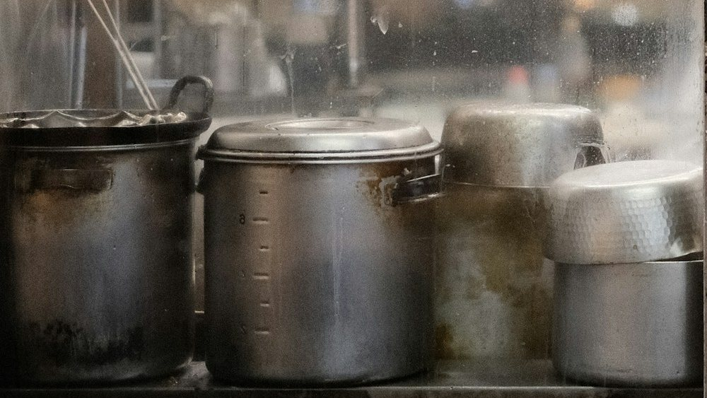

가게
주방이 바로 보이는
카운터 열 석
긴 카운터 하나뿐인 가게입니다. 국물이 떨어지면 일찍 닫습니다. 포장은 국물과 면을 따로 담아 드립니다.

- 05:30
불 올리기
닭 뼈를 센 불에, 쇼유 육수는 약한 불에.
- 09:00
면 꺼내기
전날 뽑아 하루 재운 면을 나눕니다.
- 11:00
간 맞추기
간장 양념을 섞고 차슈를 썹니다.
- 11:30
문 열기
카운터 열 석을 엽니다.
가게
긴 카운터 하나뿐인 가게입니다. 국물이 떨어지면 일찍 닫습니다. 포장은 국물과 면을 따로 담아 드립니다.

닭 뼈를 센 불에, 쇼유 육수는 약한 불에.
전날 뽑아 하루 재운 면을 나눕니다.
간장 양념을 섞고 차슈를 썹니다.
카운터 열 석을 엽니다.